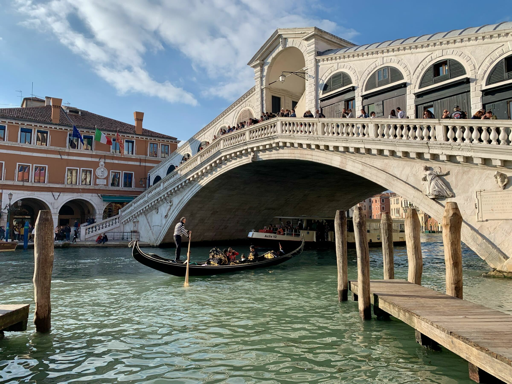
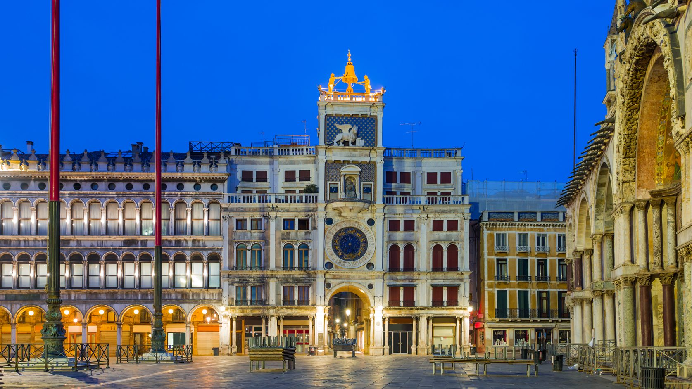

Principais Atrações
Explore as maravilhas de Veneza!
- Ponte de Rialto - A ponte mais antiga sobre o Grande Canal 
- Piazza San Marco - Principal praça de Veneza, onde fica a Basílica de São Marcos.
- "Lido" - Uma ilha internacional de Veneza
- "Torre do relogio de S.Marcos" - Torre renascentista de 1499 com vistas da cidade e um relógio mecânico com decoração simbólica. 